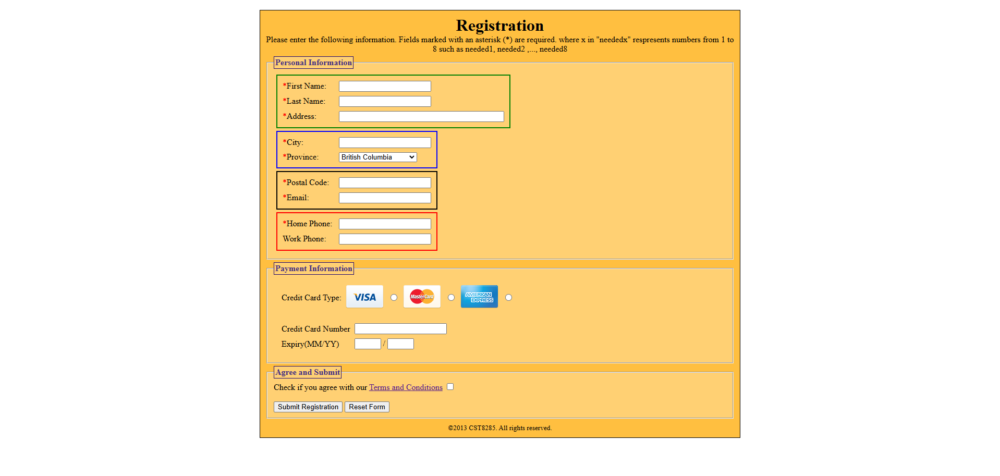
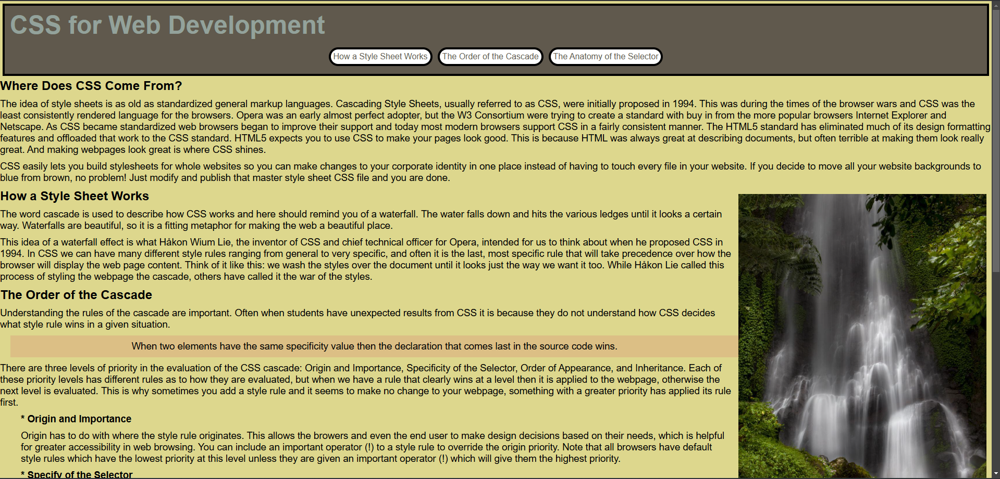

Project 1

FLEXBOX
Project Description: This project is part of our lab 2 part 2 that I had to modify this CSS file to add some styling and exploring how flexbox works, as well making it responsive for mobile or tablet users.
Project 2
FORMS
Project Description: This project is part of our lab 2 part 1 that I modifies this website files to add some CSS styling, as well web form while also following the exact image that was privided. Making sure it's responsive.
Project 3
CSS
Project Description: This project is part of our lab 3 in which we were provided a unformatted HTML document and format it using CSS by following the exact image provided. Making sure it's responsive for mobile and tablet users.